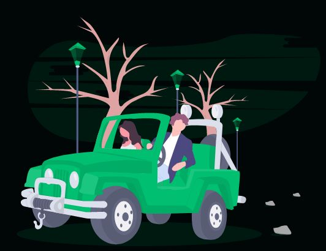
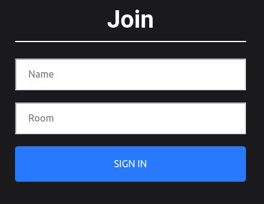

Hi, I am Dagogo Uranta
Javascript Developer.
What I Do
Web Design
Get stunning and simple webpages to easily convey your message to your clients. Whether it's a tribute page, portfolio, product landing page, busines page or blog, you are sure to get a high quality user interface from me!
From page transitions that catch your viewer's eye to simple animations to give your website that extra appeal it needs, I have your needs covered. Finally, should you need to update your design in future, I use Sass/CSS variables to keep code well organized and modular, making it more accessible to developers.
Logic for APIs
You've made a gorgeous website design, but the site is becoming more popular and now you want to personalise clients' experiences by tailoring information to them. Where do you go from here ? Using Node js, I can enhance your current website to have API endpoints that satisfy individual user requests. I provide a range of functions which include (but are not limited to):
Use of login systems to grant access to authenticated users of your application, storing updating and deleting information, and the addition of payment systems to your webpage.
Database Setup
Using MongoDB, I am able to create databases, and structure your client data into shards, to allow for easy horizontal scaling, as your site acquires more users.
Who I am
Designer & Developer based in Lagos, Nigeria.
I am a developer who uses the M-E-R-N technology stack (MongoDB, Express, React, and Node JS) to bring to life responsove, high quality web apps that guarantee a fantastic user experience.
My skills include:
- HTML
- CSS(SaSS, Bootstrap)
- Javascript(Object-Oriented and functional)
- React JS(state management with Redux)
- Debbuging
- Route handling with Node JS and Express
- Version control with Git
- Use of the Linux command line interface
- Creation, and sharding of databases with MongoDB

Work Experience
Niger Insurance Plc
August 2019- June 2020
- Assisted in the restructuring of the company’s client data storage, via meticulous data-entry, research on insurance productsand application of best practice.
- Was able to learn the process of, and assist in the coordination of staff training events and salary payment, allowing me towitness the importance of early planning, and gain an understanding of where to search for opportunity within anorganization's structure
- Honed my customer service skills by attending to a range of clients with disputes concerning their premiums. Was able to apply active listening techniques severally, to thoroughly understand customer requests, and empathize with them where possible, to make the customer feel very well attended to while the problem was being solved.
Red Cross Nigeria
June 2019- July 2019
- Worked in a team of twenty people to learn, create strategies and administer first aid to Youth Corps Members in Cross Rivers State.
- Planned and conducted daily lecture sessions, with practical scenarios, to explain emergency rescue concepts to corps members.
- Designed and implemented strategy for the team to follow during large gatherings(sports events, carnivals etc) in order to effectively administer treatment and give attention to the corps members.
- Created and encouraged the use of a documentation system for casualties attended to by the group, to foster communication and shared knowledge between members of the red cross and the camp clinic.
- The key achievement here was imparting knowledge to corps members to allow them to implement long standing first aid techniques both in camp and beyond the duration of the service. A secondary achievement was improving the functionality ofthe red cross unit, by establishing a solid communication protocol with the camp clinic and replenishing supplies.
Warwick Engineering School
October 2017- May 2018
- Worked in a team of six to develop and implement solutions to the urbanization problem in a region near Kampala Uganda Researched on and presented a definitive list of potential solutions, from which two were picked and developed upon.
- Divided the team into two sub teams based on synergy and motivations, to focus more specifically on each solution.
- The key achievement here was verifying the effectiveness of each solution and having it proposed to the local government, by university professors
This is My Portfolio Enjoy!
Enjoy!
Cinnamon Bank
Web Design for a Virtual Bank.
Design Insights
- This is a website design for a digitally oriented start-up bank . The website uses a green and black theme and consists of the following sections: a navigation bar , hero section, 3 individual feature sections, an "our services" section, a detailed footer and a sign up page.
- The navigation bar is fixed and is visible for the entirety of the website. When items are clicked, the website scrolls smoothly to the required section and said section is underlined in the nav bar
- The image backgrounds and "feature" section colours are the same such that image boundaries are indistinguishable. All buttons change colour when hovered over and images in adjacent sections are placed at alternating sides to keep viewers more engaged. Click the image(or button) below to see the site.
Technical Summary
- All pictures are svg (scalable vector graphics) images gotten from unDraw.com’s green theme , to maintain resolution at any screen size.
- React components make use of react's styled components, which integrate css with react and media queries are used to keep the elements responsive at different screen widths.
- The sign in page is visible when the sign in button is clicked and a useState hook is used to change the piece of state that determines whether the sign in page should be visible or not .
Chat Network
A Multi-Room Chat App.
Design Insights
- This simplistic app works as follows: Users are first greeted with a join screen , requesting a particular chat room the name they want to be represented by in the chat room. Messages can then be sent, with real time replies and from other users. Upon refresh , the entire chat box clears.
- Upon joining, they are greeted with a welcome message by a default admin user , and all other users in that particular chat room is made aware of their presence via a broadcast message.
- Messages can then be sent, with real time replies from other users. Upon refresh , the entire chat box clears. To use the app, please click the image or button below:
Technical Summary
- This app was created using react js for the front end , node and express js for the backend. Details for names and rooms are passed using query parameters as opposed to traditionally using props.
- React scroll to bottom library used here to allow the last sent chat bubble to always be visible. React Emojify (library) is also made use of here to convert typed symbols to emojis in the input container.
- Socket.io was used on the backend and socket.io-client on the front end . On triggering of certain events the socket connections were made to broadcast a message to all users / emit to all users minus the sender . Please visit the app to use it .
Contact Me
Leave a Request or Make an Enquiry